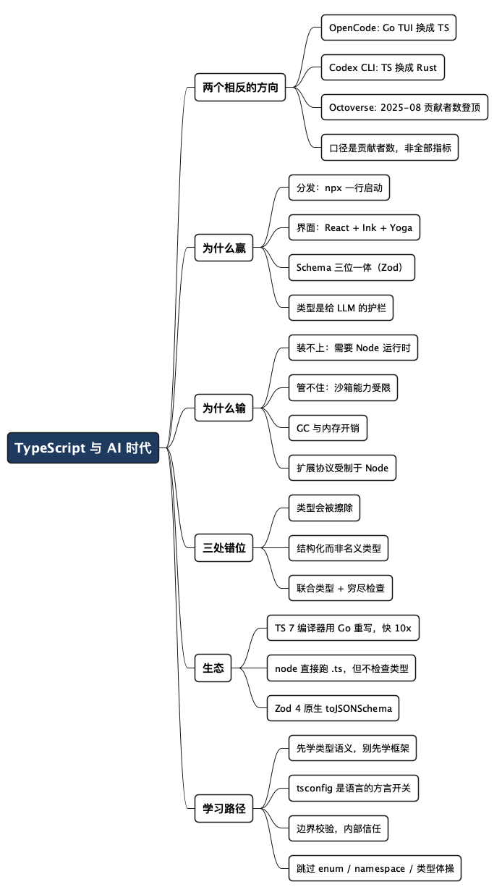

TypeScript 凭什么成了 AI 时代的新宠：一个不写 TS 的老程序员的读码笔记
Posted on 一 17 8月 2026 in Tech
| Abstract | TypeScript 凭什么成了 AI 时代的新宠 |
|---|---|
| Authors | Walter Fan |
| Category | learning note |
| Version | v1.0 |
| Updated | 2026-08-17 |
| License | CC-BY-NC-ND 4.0 |
我有时用 OpenCode 配 DeepSeek 写点业余代码——图它便宜，也图它随时能换模型。前阵子顺手把它的源码拉下来翻了翻，第一眼看 package.json，结果发现一件有意思的事：
$ cd opencode && find . -name "*.go" | wc -l
0
一年前不是这样。2025 年中我第一次看它的时候，GitHub 语言统计上还写着 Go 占 52%、TypeScript 占 40%——那个终端界面（TUI）是 Go 写的，TypeScript 内核在本地跑一个 HTTP server，两边通过 HTTP 讲话。现在 Go 一行不剩，TUI 换成了 TypeScript 加 SolidJS，跑在一个叫 OpenTUI 的框架上。
它把 Go 换成了 TypeScript。而同一年，OpenAI 把 Codex CLI 从 TypeScript 换成了 Rust。
两个团队，都在做同一类东西，方向正好相反。所以“大家都不约而同地选了 TypeScript”这个前提，得先修一修——OpenAI 早在 2025 年 6 月就宣布迁往 Rust，如今官方仓库里那份 TypeScript 实现已经被标成 legacy，写着“已被 Rust 实现取代”。
修完之后的问题反而更清楚了：TypeScript 赢的不是一场“语言之争”，而是 Agent 和工具这一层。Python 在模型层一寸没让。 这篇文章讲三件事：这一层它凭什么赢（以及在哪儿输了），语言本身有哪些让老程序员错位的特点，还有一条给写了半辈子 Java/C++/Go 的人的学习路径。
先交代我的位置：我的主业在后端、WebRTC、协作平台，Java、C++、Python、Go 是吃饭的家伙。JavaScript 我还算熟，TypeScript 用过一点，不算熟。不过实话说，有 C++ 和 JavaScript 打底，TypeScript 其实挺好学的——JS 给了你语义和运行时的直觉，C++ 给了你对类型和泛型的耐心，剩下要补的主要是几处“想当然会错”的地方。这篇算读码笔记加半个上手笔记，不是多年实战心得，别当实战心得看。
一、先把事实摆清楚
2025 年 10 月，GitHub 的 Octoverse 报告确认了一个节点：2025 年 8 月，TypeScript 的月度贡献者数首次超过 Python 和 JavaScript，登上第一，比 Python 多出约 4.2 万人，同比增长 66.6%（一年新增约 105 万贡献者）。
这个数字要看清口径。GitHub 自己在报告里注明了：这是按贡献者计数的排名，其他行业指数用不同方法，可能仍然把 JavaScript 或 Python 排在更前面。它也明确说了一句：Python 在 AI 与数据科学负载上仍然占主导。 所以这是“新项目的默认选择变了”，不是“Python 被取代了”。
再看几个主流编码 Agent 的实际技术栈：
| 工具 | 语言 | 运行时 | 终端 UI | 分发 |
|---|---|---|---|---|
| Claude Code | TypeScript（strict） | Bun | React + Ink + Yoga | npm |
| Gemini CLI | TypeScript 98% | Node.js | React + Ink | npm / npx |
| OpenCode | TypeScript（Go 已移除） | Bun | SolidJS + OpenTUI | npm / curl / brew |
| Codex CLI | Rust（原为 TS） | 原生二进制 | 原生 TUI | npm / binary |
2026 年 3 月 31 日，Anthropic 在 npm 包里误发了一个 57MB 的 source map 文件，把 Claude Code 的完整 TypeScript 源码抖了出来——1884 个文件、51 万余行代码。这份意外的资料让外界第一次看清它的内部：Bun 做运行时和打包，React + Ink 渲染终端界面，Zod 做 schema 校验，Commander 解析参数，execa 起子进程，diff 做文件对比。权限弹窗、文件 diff、工具进度、Markdown 渲染，全都是 React 组件，界面是状态的纯函数。
一句话总结这张表：这一层确实是 TypeScript 的主场，但主场里已经有人搬走了。
二、TS 在 Agent 这一层凭什么赢
我看到过不少解释停留在“类型好、生态大”，这话不算错，但太空。真正起作用的是下面四条，按我认为的重要性排序。
1. 分发方式决定语言选择
Agent CLI 的第一道竞争，不是推理质量，是能不能让一个陌生人在 30 秒内跑起来。
$ npm install -g @anthropic-ai/claude-code
$ npx @google/gemini-cli
npm 是地球上最大的软件分发网络，而目标用户——写代码的人——机器上大概率已经有 Node。你不需要教他装环境。
Python 在这一层输得挺冤。语言没问题，环境有问题：系统自带的 Python 版本、pip 的全局污染、venv 和 conda 的路线之争、企业机器上被锁死的权限。uv 出来之后好了很多，但一个要让几十万陌生人装上的工具，赌不起“用户的 Python 环境是干净的”。
这不是语言优劣，是基建差异——而基建差异往往比语言特性更能决定结局。
2. 二十年前端积累，正好对上终端 Agent 的界面需求
Agent CLI 不是往屏幕上打日志。它是一个有状态、流式刷新、要处理权限确认弹窗、要展示彩色 diff、要在任意终端尺寸下正确布局的富交互界面。
前端这二十年攒下来的东西——声明式 UI、状态驱动渲染、组件复用——恰好就是干这个的。React + Ink（用 React 写终端界面）+ Yoga（Meta 开源的约束式布局引擎，用来应对终端尺寸千变万化）这套组合，让“做一个好看又不卡的 TUI”从一件苦活变成了熟练工种。
Claude Code 甚至没直接用 npm 上的 ink 包，而是基于 react-reconciler 自己 vendor 了一份纯 TypeScript 的 Ink 和 Yoga 实现——为的是零原生依赖，好打成单文件二进制。这是个很能说明问题的细节：他们不是图省事才用 React，是认真把 React 那套模型当成了终端界面的正确抽象。
Python 的 curses 和 rich 生态不弱，但没有一个能和“React 组件 + hooks”这套心智模型和人才储备相提并论的东西。
3. Schema 即类型即文档：Agent 的刚需被 TS 生态一箭三雕
这一条我认为最被低估。Agent 的核心机制是把工具描述成 JSON Schema 喂给模型，模型返回一段 JSON，你再校验、执行。也就是说你对每个工具至少需要三样东西：一份给模型看的 JSON Schema、一份运行时校验逻辑、一份给自己代码用的静态类型。
在 TS 生态里，这三样是同一份声明的三种投影：
import * as z from "zod";
const ReadFileInput = z.object({
path: z.string().min(1).describe("相对于工程根目录的路径"),
maxBytes: z.number().int().positive().default(65536),
});
// 1. 静态类型，白送
type ReadFileInput = z.infer<typeof ReadFileInput>;
// => { path: string; maxBytes: number }
// 2. 喂给模型的工具描述（Zod 4 原生支持，不用再装 zod-to-json-schema）
const toolSchema = z.toJSONSchema(ReadFileInput);
// 3. 运行时校验：模型给的东西一律当不可信输入
function readFile(raw: unknown) {
const args = ReadFileInput.parse(raw); // 不合规直接抛
// 到这里 args 已经是 { path: string; maxBytes: number }
}
一份声明，三处收获，而且三者永远不会漂移。写过“Java 里 DTO、Bean Validation 注解、Swagger 注解各写一遍，改字段忘一处就上线事故”的人应该能体会这个价值。
Zod 4 把 JSON Schema 转换收进了核心（社区的 zod-to-json-schema 包在 2025 年 11 月停止维护）。这个时间线本身就说明了需求有多集中。
OpenCode 的做法印证了这个模式，不过它选的不是 Zod，而是 Effect 的 Schema。它的 read 工具参数是这么声明的：
export const Parameters = Schema.Struct({
filePath: Schema.String.annotate({ description: "The absolute path to the file or directory to read" }),
offset: Schema.optional(NonNegativeInt).annotate({
description: "The line number to start reading from (1-indexed)",
}),
limit: Schema.optional(NonNegativeInt).annotate({
description: "The maximum number of lines to read (defaults to 2000)",
}),
})
注意那个 description——它同时是给人看的注释和喂给模型的字段说明。工具注册的地方把这份声明转成 JSON Schema，执行前再拿同一份声明解码模型传来的参数，失败就返回一句 Invalid tool input。声明一次，模型视图、运行时校验、静态类型全都跟着走。
源码里还有一条注释，我觉得比任何教程都能说明这套东西在真实项目里怎么用：
offset和limit原本是z.coerce.number()——从 shell 调用时这个运行时强制转换有用，但在 LLM 工具调用这条路上没意义（模型吐出的是带类型的 JSON）。JSON Schema 的输出完全一样（type: "number"），所以模型看到的东西没变；只有纯 CLI 的调用方现在必须传数字而不是字符串。
这段话里有一个很实在的判断：边界校验要按调用方来设计。 人从命令行敲进来的东西需要宽容（字符串转数字），模型按 schema 生成的 JSON 不需要——多余的宽容只会掩盖真实的错误。这种取舍，光看语言教程是学不到的。
顺带说一句：内置工具用 Effect Schema，但给第三方插件开放的那条路仍然收 Zod，注册时调的就是上面那个 z.toJSONSchema()。同一个仓库里两套 schema 库并存，各管一段——这也算 TS 生态的一个侧写，好用的东西多，代价是你得自己划清边界。
我用 DeepSeek 那点便宜也是这套抽象给的。provider/ 目录下面把各家的差异都收在一处，DeepSeek 只是 openai-compatible 里的一行配置：
deepseek: { provider: "deepseek", baseURL: "https://api.deepseek.com/v1" },
但真正有意思的是隔壁 transform.ts 里那些补丁，比如这条：
// Deepseek requires all assistant messages to have reasoning on them
if (model.api.id.toLowerCase().includes("deepseek")) { /* ... */ }
“换个模型只改配置”这句话，在市场宣传里是一句轻巧的话，在代码里是一堆按模型 ID 打的补丁。抽象层不会让差异消失，只会把差异关进一间屋子。 这话对所有做过多厂商适配的人都不新鲜——数据库方言、浏览器兼容、编解码器协商，我在 WebRTC 上见过一模一样的形状。
4. 类型是给大模型用的护栏
GitHub 在 Octoverse 里给出的解释是：类型系统能减少代码的歧义，在 AI 生成的代码进生产之前就把错误抓出来。
我认同，但要加一句限定：类型的价值在 AI 时代变了性质。 从前类型主要是给人看的文档和给编译器的优化线索；现在它多了一个身份——一道自动化的、机器可读的验收关卡。AI 一分钟生成三百行，人类眼睛跟不上，tsc --noEmit 跟得上。类型错误是免费的、确定性的、不需要你写测试就存在的反馈。
这也解释了为什么“新项目默认用 TS”这件事会在 AI 编码普及的同一年出现拐点。这两件事不是巧合。
三、Codex 为什么跑了：TS 的四个失分点
OpenAI 迁移 Codex CLI 到 Rust 时给了四条理由。这四条，正好是 TypeScript 在这一层的四个短板，比任何“劣势分析”都实在：
- 零依赖安装。 当时要求 Node v22 以上，对一部分用户“很烦人，甚至直接卡死”。Rust 编译出来是单个原生二进制，什么都不用装。
- 原生安全绑定。 Agent 要在你机器上执行命令，沙箱是刚需。macOS 上他们靠 Apple Seatbelt（
sandbox-exec）包一层，Linux 上原本默认根本没沙箱，只能建议你跑在容器里。Rust 能直接绑 Linux 的 Landlock。JS 运行时拿不到这一层能力。 - 性能与内存。 没有 GC，内存占用低，启动时间从上百毫秒降到近乎为零。
- 可扩展协议。 他们要做一套 wire protocol，让别人用任意语言（包括 TS 和 Python）扩展这个 agent。用 Rust 做内核、别的语言做插件，比“一切都必须跑在 Node 里”干净。
第 3 条的实际收益其实没听起来那么大——一个主要时间花在等 API 响应的工具，省下几十毫秒启动时间意义有限。真正的痛点是第 1 和第 2 条：装不上和管不住。
除了这四条，我自己还会记两笔账：
- 类型是编译期的幻觉。
any会传染，as断言等于关掉检查，外部 JSON 一进来类型就开始骗人。更要留神的是：node file.ts直接跑 TypeScript，做的是擦掉类型，不是检查类型——一行类型检查都不做。 - 生态漂移快。 ESM 和 CommonJS 的双模块地狱至今没完全消化，构建工具换代频繁，Zod 3 到 4 也有一波破坏性变更。你在 Java 里写的代码五年后还能编译，TS 项目放两年不动，
npm install可能就先给你一堆惊喜。
还有一个我觉得很妙的反讽：TypeScript 的编译器自己，在 2026 年被 Go 重写了。
四、老程序员最容易错位的三件事
如果你写过十年 Java 或 C++，学 TypeScript 的困难不在语法——语法两天就能看懂——而在你已有的直觉全都指错了方向。有三处错位最要紧。
错位一：类型不存在于运行时
TS 的类型是注解，编译（或者说“擦除”）之后就消失了。这句话每个教程都写，但老程序员往往到踩坑时才真正相信它。
interface ToolResult { ok: boolean; output: string }
function handle(r: ToolResult) { /* ... */ }
编译之后，ToolResult 这个东西在世界上不存在了。你不能 r instanceof ToolResult，不能反射拿到它的字段，不能靠它在运行时做分派。所有 Java/C# 里靠运行时类型信息玩的花活（反射注入、注解驱动、按类型注册处理器），在 TS 里都得换别的做法。
反过来说也有好处：类型再复杂都不要运行时代价。这是它敢把类型系统做到图灵完备的底气——2017 年就有人在 TS 的 issue 里证明了这一点，后来甚至有人纯用类型注解实现了一个 SQL 数据库。
错位二：结构化类型，不是名义类型
Java 里两个类哪怕字段完全一样也是两个类型。TS 恰恰相反：长得一样就是一样。
type UserId = string;
type SessionId = string;
function loadUser(id: UserId) { /* ... */ }
const sid: SessionId = "sess_abc123";
loadUser(sid); // 编译通过。两个都是 string，编译器不觉得有问题
这个坑在真实项目里会咬人：把 sessionId 传进要 userId 的函数，编译器一声不响。想要名义类型的保护，得自己造一个“打标记”的类型：
declare const brand: unique symbol;
type Brand<T, B extends string> = T & { readonly [brand]: B };
type UserId = Brand<string, "UserId">;
type SessionId = Brand<string, "SessionId">;
function loadUser(id: UserId) { /* ... */ }
const sid = "sess_abc123" as SessionId;
loadUser(sid);
// ✗ Argument of type 'SessionId' is not assignable to parameter of type 'UserId'
brand 只存在于类型层面，运行时它还是个普通字符串，零开销。凡是 id、token、路径、金额这类“都是 string/number 但绝不能混”的值，都值得这么包一层。
错位三：建模的主力是联合类型，不是继承
这一条最值钱，也最难改。老程序员遇到“一个东西有几种形态”，本能是开一个抽象基类往下派生。TS 的惯用法是辨识联合（discriminated union）配穷尽检查。
// 老程序员的本能写法
abstract class ToolResult {
abstract render(): string;
}
class OkResult extends ToolResult { /* ... */ }
class DeniedResult extends ToolResult { /* ... */ }
// TS 的惯用写法
type ToolResult =
| { kind: "ok"; output: string }
| { kind: "denied"; reason: string }
| { kind: "error"; error: Error; retryable: boolean };
function render(r: ToolResult): string {
switch (r.kind) {
case "ok": return r.output;
case "denied": return `已拒绝：${r.reason}`;
case "error": return r.retryable ? "重试中…" : `失败：${r.error.message}`;
default: return assertNever(r);
}
}
function assertNever(x: never): never {
throw new Error(`未处理的分支：${JSON.stringify(x)}`);
}
妙处在 assertNever。当你哪天给 ToolResult 加了第四种形态 { kind: "timeout"; ... }，r 在 default 分支里就不再是 never 类型，编译器立刻在这里报错，把所有漏掉的地方一次点给你。
这是继承体系给不了的保证：加一个子类，编译器不会提醒你有哪些 switch 忘了改。写 Agent 这种“状态机遍地、每个工具调用都有一堆结果形态”的程序，这条模式的收益是压倒性的。
不夸张地说，能不能自然地用联合类型加穷尽检查建模，是判断一个人是在“用 TS 写 Java”还是在写 TypeScript 的分水岭。
五、2026 年的 TypeScript 生态地形图
给老程序员一张速查表，免得被前端生态的名词密度砸晕：
| 层次 | 现在的实际选择 | 你需要知道的 |
|---|---|---|
| 运行时 | Node.js 22+ / Bun | Claude Code 用 Bun 打包，OpenCode 用 Bun 跑 |
直接跑 .ts |
node app.ts |
Node 23.6 起默认开启，25.2 起稳定。只擦类型，不做检查 |
| 类型检查 | tsc（TS 7 起用 Go 写的） |
大工程快约 10 倍 |
| 校验 / Schema | Zod 4（或 Effect Schema） | z.infer 出类型，z.toJSONSchema 出模型工具描述 |
| 终端 UI | React + Ink + Yoga；或 SolidJS + OpenTUI | 声明式 TUI，Claude Code 自带一份 vendored 实现 |
| 模型调用 | 各家官方 SDK / Vercel AI SDK | OpenCode 用它抹平多家 provider，换模型只改配置 |
| 子进程 / diff | execa / diff | Agent 执行命令和改文件的标配 |
| Lint | typescript-eslint | 注意：TS 7 的稳定编程接口要等 7.1，相关工具链有滞后 |
| 分发 | npm / 单文件二进制 | npx 一行启动，是这一层的核心优势 |
两件值得单独说的事：
TypeScript 7 把编译器换成了 Go。 代号 Corsa，由语言总设计师 Anders Hejlsberg 领衔，2025 年 3 月宣布，2026 年 7 月 8 日正式发布。它是移植而非重写——逐文件搬过去，刻意保持类型检查行为完全一致，所以 6.0 能编过的代码在 7.0 下表现相同。收益是实打实的：
| 代码库 | 行数 | TS 6（JS 版） | TS 7（Go 版） | 提速 |
|---|---|---|---|---|
| VS Code | ~150 万 | 77.8s | 7.5s | 10.4x |
| TypeORM | ~27 万 | 17.5s | 1.3s | 13.5x |
| Playwright | ~35.6 万 | 11.1s | 1.1s | 10.1x |
编辑器加载大项目从 9.6 秒降到 1.2 秒，内存大约减半。要提醒的是：稳定的编程接口（programmatic API）推到了 7.1，typescript-eslint、ts-morph 和自定义 transformer 得再等等。只想加速类型检查和 CI，现在就可以上；构建流程依赖编译器内部 API 的，先别动。
Node 能直接跑 .ts，但别误会它做了什么。 Node 22.6 引入试验开关，23.6 默认开启，25.2 标为稳定。它的做法是把类型语法替换成空白字符——不读 tsconfig.json，不做类型检查。代价是只吃“可擦除”的语法，凡是带运行时行为的都不行：enum、含运行时代码的 namespace、类的参数属性、import = 赋值、<T> 式断言。想让编译器帮你守住这条线，打开 erasableSyntaxOnly。
六、老程序员的学习路径
我的判断是：老程序员学 TS 的问题不是学不会，而是学错顺序。前端教程从 React 和构建工具讲起，可你真正需要先搞定的是类型语义。按这个顺序走，能省下不少绕路的时间。
第一周：只搞三个心智转换，别碰任何框架。
把上面那三处错位吃透——类型会被擦除、结构化类型、联合类型加穷尽检查。找一个你熟悉的状态机（订单流转、连接状态、重试逻辑都行），用辨识联合重写一遍，写上 assertNever，然后故意加一个新状态，看编译器怎么报错。这一个练习顶十篇教程。
第二周：把 tsconfig.json 当成语言的一部分读一遍。
这不是构建配置，是语言的方言开关。同一份代码在不同 tsconfig 下是不同的语言。新项目直接从这份基线开始：
{
"compilerOptions": {
"strict": true, // 起点，不是终点
// strict 里没包含，但强烈建议开
"noUncheckedIndexedAccess": true, // 索引访问会带上 undefined
"exactOptionalPropertyTypes": true, // 区分“没有这个字段”和“字段是 undefined”
"noPropertyAccessFromIndexSignature": true,
// 现代模块与输出
"target": "ES2024",
"module": "NodeNext",
"moduleResolution": "NodeNext",
"verbatimModuleSyntax": true,
"isolatedModules": true,
// 想用 node 直接跑 .ts 就开这个
"erasableSyntaxOnly": true,
// 质量检查
"noUnusedLocals": true,
"noUnusedParameters": true,
"noImplicitReturns": true,
"noFallthroughCasesInSwitch": true
}
}
其中 noUncheckedIndexedAccess 是性价比最高的一项，而且它不在 strict 里面，得单独开。很多人以为开了 strict 就万事大吉，其实还留着一个大洞。
第三周：在边界上装 Zod，内部信任类型。 划清一条线：所有从外面进来的东西——HTTP 请求体、配置文件、环境变量、模型返回的 JSON——一律先过 schema 校验；过了线以内的代码，放心相信类型。这个原则和后端服务里“入口做参数校验”是同一件事，只是 TS 生态里的工具好得多。
第四周：读一份真实的 Agent 源码。
sst/opencode 是开源的（MIT），而且是你每天在用的东西，读起来有动力。建议的读法：先看 packages/opencode/src/tool/ 下面任意一个工具（read.ts 最短），把“schema 声明 → 转 JSON Schema → 解码模型输入 → 执行”这条链走通，再往上看 core/src/tool/tool.ts 里的 Tool.make() 是怎么把这条链包成一个泛型工厂的。一个工具看懂，整个 agent 的骨架就明白了。读代码比读教程更能看出一门语言在真实工程里长什么样。
明确跳过的东西： 装饰器、namespace、enum、复杂的类继承体系、以及各种“类型体操”炫技。类型工具你只需要真正掌握 Pick / Omit / Record / Partial 这四个，加上认得出 infer 是干什么的就够了。类型系统图灵完备是个诱惑，但每一层递归都在花你的编译时间，而且半年后你自己也读不懂。
七、常见陷阱清单
按我读码时记下来的顺序，从最容易中招的排起：
| 陷阱 | 症状 | 对策 |
|---|---|---|
as 不是类型转换 |
JSON.parse(raw) as Config 什么都没检查 |
边界上用 Schema.parse()，as 只在你确实比编译器懂时用 |
| 索引访问撒谎 | arr[5] 类型是 T 而不是 T \| undefined |
开 noUncheckedIndexedAccess |
any 会传染 |
一个 any 顺着调用链把整片类型化掉 |
用 unknown 代替；catch (e) 里的 e 本来就是 unknown，别急着断言 |
enum 不可擦除 |
node app.ts 跑不起来 |
用 as const 对象加 typeof 取值类型 |
| 浮空的 Promise | 忘了 await，错误静默消失 |
开 @typescript-eslint/no-floating-promises |
| 结构化类型混用 id | sessionId 传进了要 userId 的函数 | 用 branded type 打标记 |
| 可选属性的两种含义 | {a?: number} 和 {a: number \| undefined} 被当成一回事 |
开 exactOptionalPropertyTypes |
| ESM / CJS 混用 | import 和 require 打起来，报错信息读不懂 |
定下 "module": "NodeNext" 加 verbatimModuleSyntax，一个项目只走一条路 |
| 类型体操上瘾 | 编译变慢，同事（和半年后的你）读不懂 | 复杂类型加注释；实在绕不过去就用运行时校验换掉 |
enum 那条给个具体写法，因为改法不那么直观：
// ✗ 不可擦除：node app.ts 跑不了，erasableSyntaxOnly 会报错
enum Role { User = "user", Assistant = "assistant" }
// ✓ 可擦除的等价写法
const Role = { User: "user", Assistant: "assistant" } as const;
type Role = typeof Role[keyof typeof Role]; // "user" | "assistant"
本文的代码片段我都在 TypeScript 7.0.2 加 Zod 4.4.3 下按上面那份 tsconfig 实测跑过。顺手验证了三件事：enum 在 erasableSyntaxOnly 下报 TS1294，node b.ts 直接抛语法错误；索引访问那段在开了 noUncheckedIndexedAccess 后报 TS18048，不开就干净编过——这个洞是真的；而 node c.ts 照样让它跑到运行时崩掉，证明擦除确实不做检查。
顺带一提，我搭这个验证环境时第一次 tsc 就撞了 ESM/CJS 那条陷阱：package.json 里没写 "type": "module"，配了 verbatimModuleSyntax 之后每个 import 和 export 都报 TS1295。这个坑排在清单倒数第二，但它是我这次唯一真踩到的一个。
总结：TypeScript 赢的是分发和界面，不是语言之争
回到开头那两个相反的方向。OpenCode 把 Go 写的 TUI 换成 TypeScript，OpenAI 把 TypeScript 内核换成 Rust——看着矛盾，其实各自都算对了自己的账。
OpenCode 要的是迭代速度和贡献者：一个开源项目，界面天天改，与其维护 Go 和 TS 两套代码、中间隔一层 HTTP，不如全都收进 TypeScript，让所有人在一个语言里改。OpenAI 要的是装得上和管得住：一个要铺给全世界的商业工具，Node 依赖是装机门槛，沙箱能力是安全底线，这两条 JS 运行时给不了。
同一层的东西，取舍不同，答案就不同。所以我的结论是三句话：
- TS 赢的是 Agent 与工具这一层，Python 在模型层一寸没让。 PyTorch、transformers、vLLM、CUDA 绑定，没有任何位置在动摇。这不是替代关系，是分工。
- 赢的原因主要是工程性的，不是语言性的。 npm 的分发能力、React/Solid 那套界面抽象、一份 schema 同时服务模型和编译器，这些都是二十年生态积累的红利，而不是类型系统比谁优雅。
- 它也确实有输的地方，而且 OpenAI 已经把账算给你看了。 装不上、管不住沙箱、内核受制于 Node，到了某个规模就会成为迁出的理由。“用 TS 快速做出来，成熟后用 Rust 或 Go 重写内核”正在变成一条常规路线——TypeScript 的编译器自己就是这么被 Go 重写的。
对老程序员的建议：这门语言值得花两三周认真学，而且有 C++ 和 JavaScript 打底的人学起来相当快——JS 给你运行时的直觉，C++ 给你对类型和泛型的耐心，剩下要补的主要是那三处“想当然会错”的地方。只是别按前端教程的顺序学：先掰过来类型擦除、结构化类型、联合类型这三处错位，把 tsconfig 当语言的一部分读一遍，边界上装好校验——剩下的框架和工具链，等你真需要时再学，一点都不晚。
至于要不要为它焦虑，我倒觉得不必。工具层的语言换过很多轮了：Perl、Ruby、Python、现在是 TypeScript。每一轮真正沉下来的，从来不是语法记忆，而是“如何划边界、如何建模状态、如何让错误早点暴露”这些东西。这些换语言不丢。
全文思维导图
@startmindmap
<style>
mindmapDiagram {
node {
BackgroundColor #F8F9FA
RoundCorner 10
Padding 10
FontSize 13
}
:depth(0) {
BackgroundColor #1E3A5F
FontColor white
FontSize 18
FontStyle bold
}
:depth(1) {
FontSize 15
FontStyle bold
}
:depth(2) {
FontSize 13
}
}
</style>
* TypeScript 与 AI 时代
** 两个相反的方向
*** OpenCode: Go TUI 换成 TS
*** Codex CLI: TS 换成 Rust
*** Octoverse: 2025-08 贡献者数登顶
*** 口径是贡献者数，非全部指标
** 为什么赢
*** 分发：npx 一行启动
*** 界面：React + Ink + Yoga
*** Schema 三位一体（Zod）
*** 类型是给 LLM 的护栏
** 为什么输
*** 装不上：需要 Node 运行时
*** 管不住：沙箱能力受限
*** GC 与内存开销
*** 扩展协议受制于 Node
** 三处错位
*** 类型会被擦除
*** 结构化而非名义类型
*** 联合类型 + 穷尽检查
** 生态
*** TS 7 编译器用 Go 重写，快 10x
*** node 直接跑 .ts，但不检查类型
*** Zod 4 原生 toJSONSchema
** 学习路径
*** 先学类型语义，别先学框架
*** tsconfig 是语言的方言开关
*** 边界校验，内部信任
*** 跳过 enum / namespace / 类型体操
@endmindmap

本作品采用知识共享署名-非商业性使用-禁止演绎 4.0 国际许可协议进行许可。 欢迎在我的个人网站 https://www.fanyamin.com 访问原文并评论。